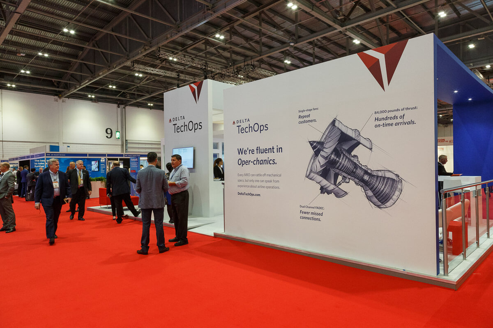

Our Events
Check Us
Out Today!
 Space Exploration Day is an exciting event that takes place every year at the Aerospace Art Museum, providing visitors with the opportunity to learn about and celebrate the history and future of space exploration. The event features a variety of interactive exhibits, educational programs, and special presentations from experts in the field. Visitors of all ages can explore models of spacecraft and space stations, learn about the latest advancements in space technology, and even try their hand at operating a robotic rover. Special events include talks from astronauts, Q&A sessions with leading scientists, and screenings of space-themed films. There are also hands-on activities, such as building your own rocket, where visitors can learn about the science behind space exploration and the challenges of designing and launching a spacecraft.
Space Exploration Day is an exciting event that takes place every year at the Aerospace Art Museum, providing visitors with the opportunity to learn about and celebrate the history and future of space exploration. The event features a variety of interactive exhibits, educational programs, and special presentations from experts in the field. Visitors of all ages can explore models of spacecraft and space stations, learn about the latest advancements in space technology, and even try their hand at operating a robotic rover. Special events include talks from astronauts, Q&A sessions with leading scientists, and screenings of space-themed films. There are also hands-on activities, such as building your own rocket, where visitors can learn about the science behind space exploration and the challenges of designing and launching a spacecraft.
At Space Exploration Day, visitors can get a sense of the vastness and complexity of space through the museum's planetarium show, which takes viewers on a journey through the galaxy. They can also see some of the artifacts from famous space missions, such as moon rocks, spacesuits, and other equipment used by astronauts. The event is an excellent opportunity for families and individuals who are interested in science, technology, engineering, and math to explore the exciting world of space exploration and to learn more about the science behind it.

Aviation History Month is an annual event held at the Aerospace Art Museum, celebrating the rich history of aviation and the pioneers who have made it possible. Throughout the month, the museum features exhibits and displays on the evolution of flight, from the earliest attempts at manned flight to the modern age of jet planes and commercial aviation.
In addition to the permanent exhibits, Aviation History Month offers a range of special events and activities. These include talks from aviation historians and experts, workshops on aircraft design and maintenance, and screenings of aviation-themed films. Visitors can also participate in a variety of interactive activities, such as flight simulators and virtual reality experiences, to gain a better understanding of the challenges and thrills of aviation.
One of the highlights of Aviation History Month is the museum's flight demonstrations, where visitors can see historic aircraft in action. The demonstrations showcase the technology and beauty of aircraft from different eras and highlight the importance of aviation to society. Whether you are an aviation enthusiast or simply interested in the history of flight, Aviation History Month is an exciting and educational event that offers something for everyone.